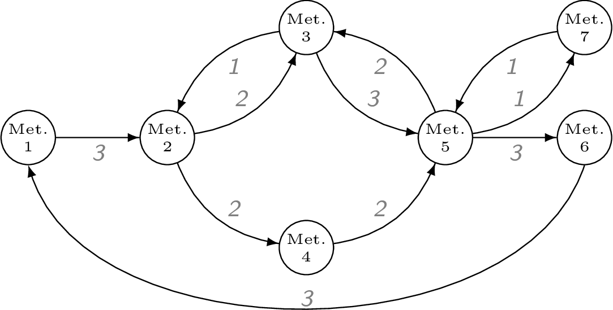
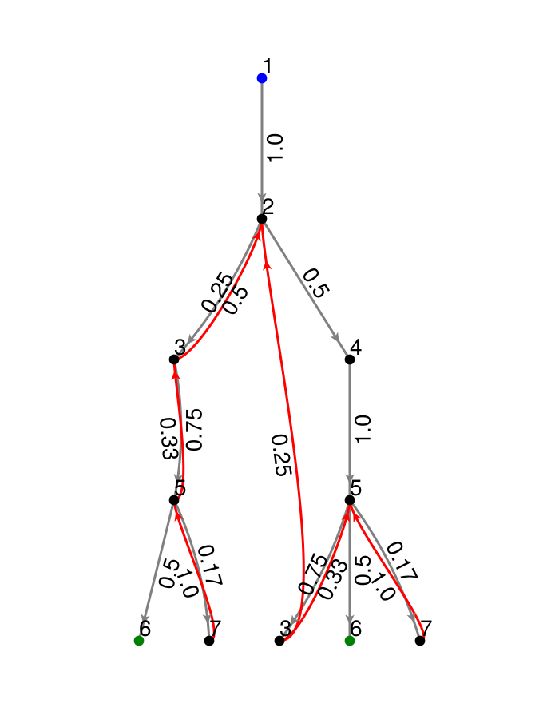

CHMC (metabolic networks)
This section demonstrates how to use the functions in MarkovWeightedEFMs.jl to analyze the following unimolecular reaction network.

Problem statement
Given the metabolic network above, its steady state fluxes, and its elementary flux modes (EFMs), what is the set of EFM weights that reconstructs the observed network fluxes?
Inputs
For this type of problem, we require the following:
- Stoichiometry matrix of unimolecular reactions (must be unimolecular and strongly-connected; either open or closed loop)
- Steady state fluxes along each reaction.
The network metabolites and reactions are typically encoded in an $m$ by $r$ stoichiometry matrix S. The steady state flux vector is stored as a separate vector.
using MarkovWeightedEFMs # load package
# Stoichiometry matrix and flux vector for the example network
S = [#
-1 0 0 0 0 0 0 0 0 0 1
1 -1 1 -1 0 0 0 0 0 0 0
0 1 -1 0 -1 1 0 0 0 0 0
0 0 0 1 0 0 -1 0 0 0 0
0 0 0 0 1 -1 1 -1 -1 1 0
0 0 0 0 0 0 0 1 0 0 -1
0 0 0 0 0 0 0 0 1 -1 0
]
v = [3, 2, 1, 2, 3, 2, 2, 3, 1, 1, 3]We can check that the flux vector satisfies the steady state requirements.
all(S * v .== 0) # should evaluate as truetrueSolving for EFM sequences, probabilities, and weights
The following function applies our (discrete-time) cycle-history Markov chain (CHMC) method to compute the network EFMs, their steady state EFM probabilities, and weights. By default, the last parameter is 1 and can be omitted from the function. This parameter is the (arbitrary) initial state to root the CHMC. The choice of root state does not change the EFM probabilities or weights and is explained further in the section below.
res = steady_state_efm_distribution(S, v, 1)CHMCStandardSummary([[3, 2, 3], [6, 1, 2, 3, 5, 6], [3, 2, 4, 5, 3], [3, 5, 3], [7, 5, 7], [6, 1, 2, 4, 5, 6]], [0.10638297872340424, 0.19148936170212763, 0.042553191489361694, 0.2553191489361702, 0.14893617021276592, 0.2553191489361702], [0.7142857142857143, 1.2857142857142858, 0.2857142857142857, 1.7142857142857144, 0.9999999999999999, 1.7142857142857144])The enumerated EFM sequences are
res.e6-element Vector{Vector{Int64}}:
[3, 2, 3]
[6, 1, 2, 3, 5, 6]
[3, 2, 4, 5, 3]
[3, 5, 3]
[7, 5, 7]
[6, 1, 2, 4, 5, 6]The corresponding EFM probabilities are
res.p6-element Vector{Float64}:
0.10638297872340424
0.19148936170212763
0.042553191489361694
0.2553191489361702
0.14893617021276592
0.2553191489361702The corresponding EFM weights are
res.w6-element Vector{Float64}:
0.7142857142857143
1.2857142857142858
0.2857142857142857
1.7142857142857144
0.9999999999999999
1.7142857142857144We can check that the EFM weights reconstruct the observed network fluxes
E = reshape_efm_vector(res.e, S) # matrix of EFM weights
E * res.w ≈ v # passestrueA binary EFM matrix with rows = # reactions and columns = # EFMs can be converted back to the array of EFM sequences by
reshape_efm_matrix(E, S)6-element Vector{Vector{Int64}}:
[2, 3, 2]
[1, 2, 3, 5, 6, 1]
[3, 2, 4, 5, 3]
[3, 5, 3]
[5, 7, 5]
[1, 2, 4, 5, 6, 1]Visualizing the CHMC
The following plotting function visualizes the CHMC rooted on a metabolite state (1 by default).
using GLMakie # Makie backend
GLMakie.activate!()
T = stoichiometry_to_transition_matrix(S, v)
plot_chmc(T, 1) # the last parameter is the rooted metabolite index
If using the GLMakie backend, ensure OpenGL is installed on your machine and accessible by Julia. The GLMakie plot is interactive and allows users to drag nodes and zoom in/out. Otherwise, you could choose another backend such as CairoMakie to generate and save a static plot. A prettier, hand-coded version of the transformed network is shown below.
The blue node is the root of the tree and the green nodes indicate that there is an edge back up to the root. By default, these arrows are omitted to avoid cluttering the plot.